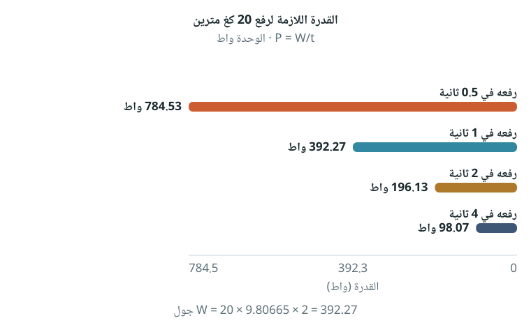

الشغل والقدرة: العمل الذي يُقاس بالطاقة
Work and Power
الشغل هو طاقة تُنقل بقوة على مسافة (W = F·d)، والقدرة معدّل نقلها (P = W/t). رفع 20 كغ مترين يكلّف 0.39 ك.ج مهما طال الزمن، لكن القدرة اللازمة تتضاعف كلما نُصف الزمن: من 98.07 واط في أربع ثوان إلى 784.53 واط في نصف ثانية.
اجلس على كرسي وارفع كتابًا عن الطاولة ببطء، ثم أعده وأنزله بسرعة. المسافة نفسها والكتاب نفسه، لكن يدك في الحالتين لا تبدو متعبة بالقدر نفسه. الشغل الفيزيائي واحد: القوة (وزن الكتاب) مضروبة في المسافة الرأسية. ما اختلف هو القدرة: المعدل الذي انتقلت به الطاقة. الشغل كمية مستقلة عن الزمن، والقدرة لا معنى لها بدونه. ولهذا تُقاس محركات السيارات بالقدرة (كيلوواط) وتُقاس فواتير الكهرباء بالطاقة (كيلوواط·ساعة): الأولى سرعة الصرف، والثانية مجموع ما صُرف. وفي الهندسة العملية لا يكفي أن تعرف أن رفعًا ما يستهلك طاقة معروفة؛ لا بد من معرفة الزمن المتاح، لأن الزمن هو ما يحدّد حجم المحرك أو المضخة أو الرافعة، ويحدّد أيضًا الحرارة المتولدة في الأسلاك والمحامل أثناء النقل.
كيف تعمل الظاهرة؟
الشغل يُنجز عندما تُزيح قوة جسمًا في اتجاهها: W = F·d·cosθ، وحين تكون القوة عمودية على الإزاحة لا يُنجز شغل (حمل حقيبة أثناء المشي أفقيًا). والقدرة هي مشتقة الشغل بالنسبة للزمن، P = dW/dt، وتصبح في الحالة المنتظمة P = W/t. الطاقة المنقولة لا تختفي: تذهب إلى طاقة وضع ثقالية (m·g·h) عند الرفع، أو إلى طاقة حركية (½mv²) عند التعجيل، أو إلى حرارة واحتكاك. وفي الأنظمة الحقيقية تُضاف خسائر: كفاءة المحرك تحوّل جزءًا من القدرة الداخلة إلى حرارة لا إلى شغل مفيد، ولذلك تُقاس قدرة الخرج لا الدخل عند الحكم على الأداء.
العلاقة بالأرقام
رفع 20 كغ مسافة 2 م عند g = 9.80665 م/ث² يستهلك W = 20×9.80665×2 = 392.27 جول = 0.39 ك.ج. نفس العمل في ثانية واحدة يعني قدرة 392.27 واط (0.39 ك.و)؛ وفي أربع ثوان 98.07 واط فقط. ودفع صندوق بقوة 100 نيوتن مسافة 5 م ينجز 500.00 جول. والكيلوواط·ساعة وحدة طاقة لا قدرة: 1 kWh = 3.6 ميغاجول، أي ما يعادل تشغيل قدرة 1 كيلوواط ساعة كاملة.
مفاهيم متقاربة
الخطأ الشائع الخلط بين الشغل والقدرة وبين الطاقة والقوة. القوة (نيوتن) سبب، والشغل (جول) أثرها على مسافة، والقدرة (واط) سرعة هذا الأثر، والطاقة (جول أيضًا) رصيد قابل للتحول. لذلك يُقال إن محركًا «قوته 100 كيلوواط» بينما القدرة هي المقصودة، ويُقال إن بطارية «قدرتها 5 كيلوواط·ساعة» بينما الطاقة هي المقصودة. وتمييز آخر لازم: الشغل الذي تبذله أنت على جسم قد يكون سالبًا (تُبطئه)، فيكون الجسم هو من يبذل شغلًا عليك، وهذا ما يفسّر تسخين الفرامل.
حدود التطبيق
W = F·d صحيحة لقوة ثابتة على مسار مستقيم؛ ولقوة متغيرة يلزم التكامل W = ∫F·dx. وفي الأنظمة الدورانية تصبح P = τ·ω (عزم × سرعة زاوية). والقدرة اللحظية تختلف عن المتوسطة في الدورات ذات الحمل المتقطع، فتُحسب الثانية من منحنى الحمل لا من القسمة على الزمن الكلي. ولا تُغني هذه العلاقات عن حساب الخسائر: احتكاك المحامل وفقد الضغط في الأنابيب وتسرب الحرارة كلها تستهلك قدرة لا تظهر في الشغل المفيد، ولهذا يقول المهندس «قدرة على العمود» و«قدرة كهربائية مدخلة» ولا يخلط بينهما.

| الكمية | القيمة | المصدر |
|---|---|---|
| شغل رفع 20 كغ مسافة 2 م | 392.27 جول | [1] |
| نفس الشغل في ثانية واحدة | 392.27 واط | [1] |
| شغل دفع 100 نيوتن مسافة 5 م | 500.00 جول | [1] |
| الكيلوواط·ساعة بالميغاجول | 3.6 ميغاجول | [2] |
| الحصان الميكانيكي بالواط | 745.7 واط | [2] |
المصادر
- 1 College Physics 2e — 7.1 Work: The Scientific Definition — OpenStax. openstax.org/books/college-physics-2e/pages/7-1-work-the-scientific-definition · اطُّلع عليه 2026-11-19
- 2 NIST Special Publication 811 — Guide for the Use of the SI — NIST. www.nist.gov/pml/special-publication-811 · اطُّلع عليه 2026-11-19
استشهد بهذا المصطلح
الصيغتان مبنيتان من بيانات الصفحة نفسها: العنوان والتاريخ ورابط النسخة المنشورة.
الشغل والقدرة: العمل الذي يُقاس بالطاقة — Work and Power. (2026). ديوان المعرفة — انفراد. https://infiradev.com/diwan/terms/work-and-power.html
@misc{work-and-power2026,
title = {الشغل والقدرة: العمل الذي يُقاس بالطاقة},
titleaddon = {Work and Power},
howpublished = {{ديوان المعرفة — انفراد} — مرجع علمي عربي},
year = {2026},
url = {https://infiradev.com/diwan/terms/work-and-power.html},
urldate = {2026-11-19},
note = {مراجعة علمية: عبدالله الهويدي — مراجعة في تطبيق انفراد}
}
راجعه: عبدالله الهويدي — مراجعة في تطبيق انفراد · 2026-11-19 · آخر تحديث 2026-11-19